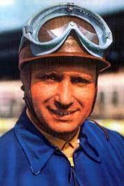
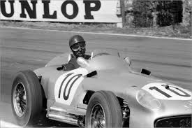
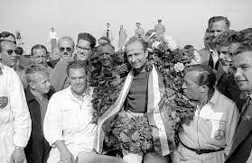

<html>
  <head>
    <meta charset="utf-8">
    <title>Juan Manuel Fangio</title>
	<link rel="stylesheet" href="style/style.css">
  </head>
</html>

<h1>Juan Manuel Fangio</h1>


<p>Juan Manuel Fangio est un pilote argentin qui a dominé le monde de la Formule 1 durant les années 50.
 Fangio a été champion du monde 5 fois, dont 4 d’affilée entre 1954 et 1957. 
 C’est aussi le seul pilote ayant remporté le titre mondial avec 4 écuries différentes. 
 Après un premier titre en 1951 avec Alpha-Romeo, Fangio en décroche 2 sur Mercedes en 1954 et 1955.
 L’année suivante il remporte son 4ème titre avec Ferrari, puis pour démontrer sa grandeur, il remporte un dernier titre avec Maserati à l’âge de 47 ans.

Les statistiques de Fangio sont tout simplement impressionnantes. 
Il a remporté 24 victoires en 51 courses, ce qui fait presque 50% de courses gagnées.
 Les 2 seules années où Fangio n’a pas finit champion, il était second, ce qui démontre sa régularité au plus haut niveau.</p>
 
  
  
  

  <body background="image/fondnoir.jpg">
  <background-attachment:center center;>